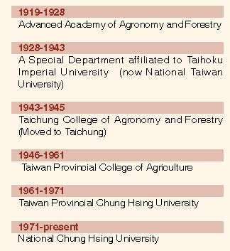
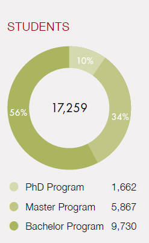

History |
|

|
Campus |
NCHU is located in the south of Taichung City with an area of approximately 53 hectares. The main campus contains
the College of Liberal Arts, the College of Agriculture and Natural Resources, the College of Science, the College of
Engineering, the College of Life Sciences, the College of Veterinary Medicine, the College of Management, the College
of Law and Politics, and the School of Innovation and Industry Liaison. The university owns four experimental forest
stations located respectively in New Taipei City (Wenshan Forest Station), Nantou County (Huisun Forest Station),
Taichung City (Tungshih Forest Station), and Tainan City (Hsinhua Forest Station). It also owns two experimental
farms located at Wufeng and Wujih in Taichung City and a Horticultural Experiment Station located at Renai in Nantou County.
|
Numbert of Student |

|
The first and the best in Taiwan |
- We are the first in Taiwan to have developed the transgenic papaya plants resistant to Papaya ringspot virus.
- We are the first in Taiwan to have created a generation of transgenic rabbits carrying human hepatitis B surface antigen gene.
- We are the first in Taiwan to have cloned a rabbit by using blastomere transfer.
- We are the first in Taiwan to have develped the research on genetic diversity of Colocasia and Xanthosoma.
- We own the first Taiwan native chicken research center (since 1982).
- We own the first computerized image-treating fish counters.
- We are the first to have established a fermentation pilot plant for the development of microbial biopesticides and plant disease control.
- We own the first Varian Unity Inova 800 MHz NMR.
- We own the best automatic equipments and technology to support biotechnological research and industry.
- We are the first to have established a 3D campus guiding system.
- We are the first to own a microtensile machine for measuring the mechanical properties of micro-nano scale thin films.
- We are the first to be equipped with an energy-filtered transmission electron microscope.
|
Special Honors |
- Six alumniof the Department of Applied Economics were each once appointed as the Minister or Deputy Minister of the Council of Agriculture.
- According to the statistics of the Intellectual Property Office of theMinistry of Economic Affairs, in terms of thenumber of filed patens, NCHU ranks among thetop 100 institutes and incorporations in Taiwan.
- We havesuccessfully developed the “Swine Atropic Rhinitis Vaccine” and that is licensed to Bayer Company for the global marketing.
- President Shaw, J. F., aprofessor of the Department of Food Science and Biotechnology, is the first one in Taiwanto receivetheBiotechnology Lifetime Achievement Award of American Oil Chemists’ Society andbecome a fellow of the AAAS.
- Dr. Yen, G. C, a professor of the Department of Food Science and Biotechnology, isranked among the top 1% in the agriculturalcategory of ISI web knowledge for the number of times that two of his papers are cited. Healso received 2005 Fellow Award from Division of Agricultural and Food Chemistry of the American Chemical Society.
|
|